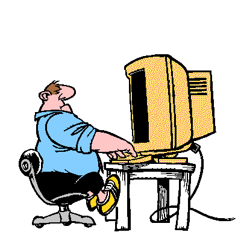

10 Tips to Keep You Comfortable and Healthy at the Computer:
- The monitor should be at eye level, as well as directly in front of the user to prevent neck strain. Monitor should also be kept 30 to 60cm from the user's face in order to prevent eye strain.
- Keep your wrists in a straight or neutral position. Avoid planting your wrists on the table or wrist rest, this causes the wrists to bend unnaturally. Repetitive wrist strain can lead to carpal tunnel syndrome, which is common in those who use computers often.
- Take breaks often. Staring at a screen for too long can damage your vision. Working hard can get stressful, and sometimes a break is just what you need.
- Avoid hitting the keyboard with excessive force. The keys never did any harm to you, and eventually you will start to feel the effects of this force on your hand and finger joints.
- Keep a clean work area. This means getting rid of dirt and dust, as well as avoiding clutter, which can get distracting.
- The keyboard and mouse should be kept at roughly elbow height, this is the most comfortable position to reduce stress.
- Always use a chair that provides back support. Keep your feet on the floor or a footrest in order to reduce the pressure on your lower back
- Relax and reset your eyes by focusing on more distant objects every so often. Looking at a screen close to your face for long periods of time puts a lot of stress on your eyes.
- Do not hold a pen or pencil in your fingers while typing. This changes the way stress is applied to your fingers.
- The lighting in your workspace should not cause a glare on the screen. If glare cannot be avoided, lower the brightness of the screen.